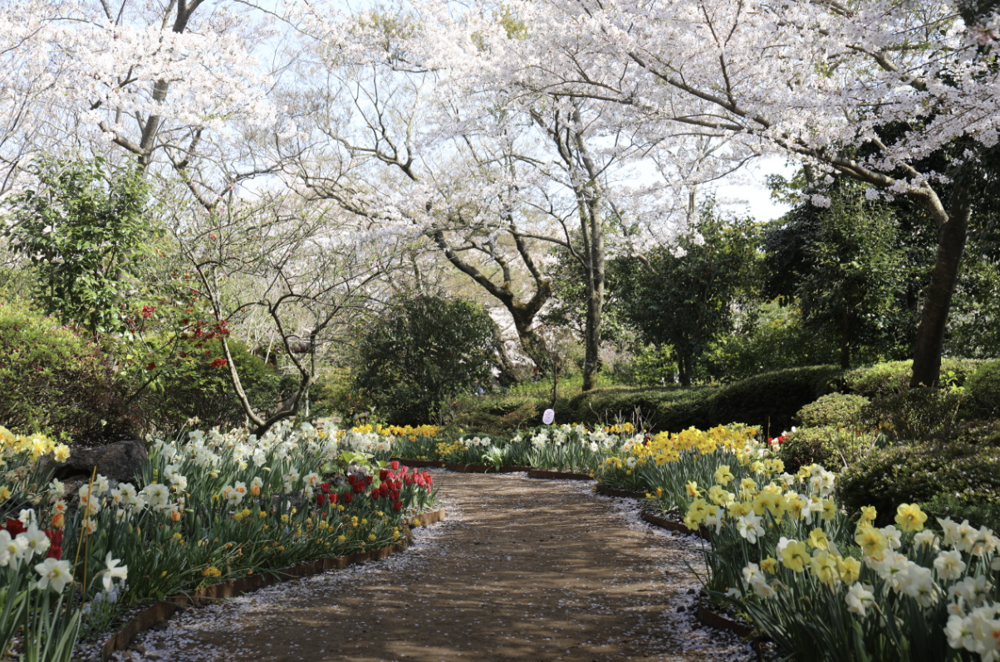

제주도의 명소
한라산

(제주 서귀포시 토평동 산15-1)
높이 1,950m이다. 남한에서 가장 높은 산이다.
제3기 말 ~ 제4기 초에 분출한 휴화산이다.
현무암으로 이루어져 있으며 줄기는 제주도 중앙에서 동서로 뻗는다.
남쪽은 경사가 심한 반면 북쪽은 완만하고, 동서쪽은 비교적 높으면서도 평탄하다.
제3기 말 ~ 제4기 초에 분출한 휴화산이다.
현무암으로 이루어져 있으며 줄기는 제주도 중앙에서 동서로 뻗는다.
남쪽은 경사가 심한 반면 북쪽은 완만하고, 동서쪽은 비교적 높으면서도 평탄하다.
카멜리아힐
(제주 서귀포시 안덕면 병악로 166)
제주 자연을 담은 동백 정원 카멜리아 힐은 30년 열정과 사랑으로 제주의 자연을 담은,
동양에서 가장 큰 동백 수목원입니다.
동양에서 가장 큰 동백 수목원입니다.